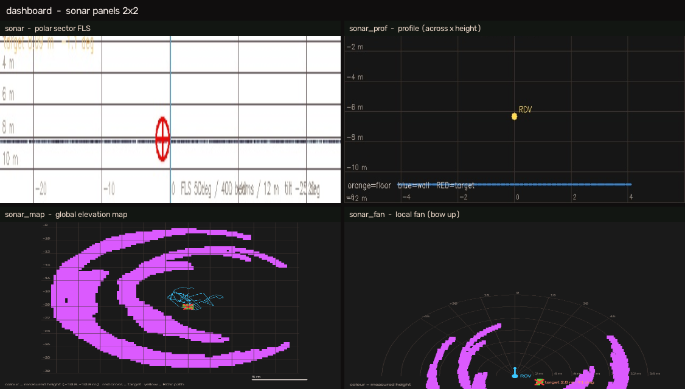
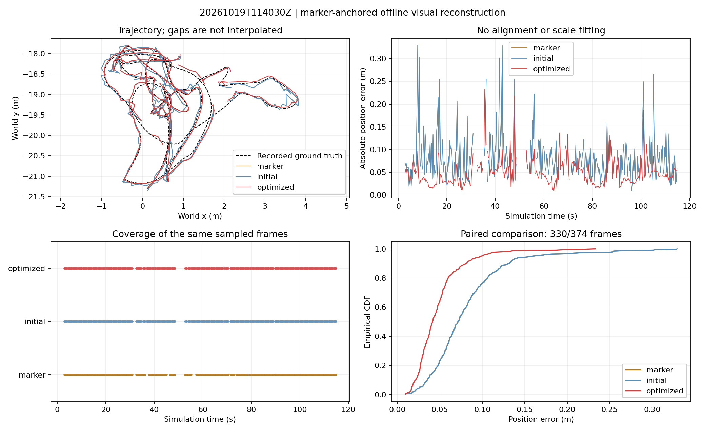

A simulation study — where each modality stops working
What a robot can still know about where it is, when the water takes away most of what vision gives. A pool-scale scene in Isaac Sim with a turbidity parameter I can sweep, a visual SLAM chain, and a forward-looking imaging sonar implemented from its physics.
All results are from simulation. The sonar is synthesised from its acoustic model, not measured by a real device. This changes what the numbers mean, so it is stated first.
| Sequence | Water | Localisable | Median err. | RMSE |
|---|---|---|---|---|
| 2026-10-18 (136 s) | clear, ~31 m | 441/454 (97.1%) | 3.71 cm | 4.39 |
| 2026-10-19 (112 s) | turbid, ~8 m | 349/374 (93.3%) | 4.13 cm | 5.58 |
Errors measured in the AprilTag world frame, without ground-truth alignment and without scale fitting. An independent recomputation gives 0.0448 / 0.0422 m all-frame median.
Ray casting, target strength, transmission loss, Rayleigh (Swerling 1) speckle, acoustic shadow, and a configurable vertical beam wedge — no wrapper around an existing sonar simulator. The two modalities fail in different regimes; that boundary, not a fusion result, is what this study measures.

